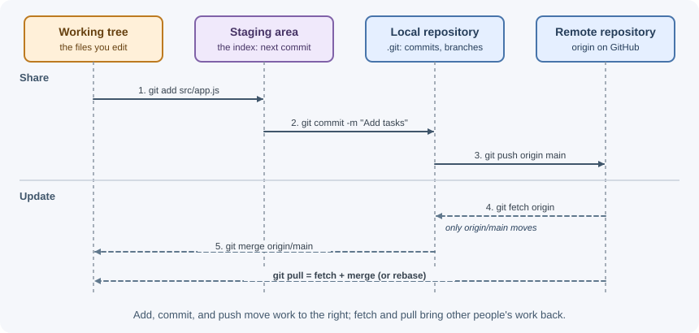

Git and GitHub¶
Git is a distributed version control system: every clone holds the full history of a project as a graph of snapshots, so you can record changes, work on branches in parallel, compare any two versions, and undo almost any mistake without a network connection. GitHub hosts Git repositories and adds the collaboration layer around them: pull requests, code review, branch protection, issues, releases, and GitHub Actions for automation. Git is the tool; GitHub is one of several platforms (with GitLab, Bitbucket, and Azure DevOps) built on top of it.
What Git and GitHub provide¶
- A complete, verifiable history: every commit records who changed what, when, and why, and is identified by a hash of its content, so history cannot be altered silently.
- Safe parallel work: branches are cheap pointers, so each feature, fix, or experiment can live on its own line of work and be merged when ready.
- Review before change: pull requests show a diff, run automated checks, and collect approvals before code reaches the main branch.
- Recovery: reverts, the reflog, and
git bisectlet you undo a bad change, recover "lost" commits, and find the commit that introduced a bug. - The trigger for automation: pushes, pull requests, and tags start the CI/CD pipelines that test, build, and deploy your code.
- Releases: tags mark exact versions, and GitHub Releases attach notes and build artifacts to them.
Git also asks for discipline: clear commit messages, small focused changes, an agreed branching strategy, and care with commands that rewrite history.
How a typical change flows through Git¶
A change to the TaskFlow API moves through four areas:
- You edit files in the working tree, the checked-out copy of the project on your disk.
git addcopies the chosen changes into the staging area (the index), which holds the snapshot your next commit will record.git commitstores that snapshot as a new commit in the local repository (the.gitdirectory) and moves your branch to it.git pushuploads the new commits to the remote repository on GitHub, usually on a feature branch.- You open a pull request; CI runs, teammates review, and the branch is
merged into
main. - Others run
git fetchto download the new commits (which moves their remote-tracking branchorigin/main), then merge or rebase to update their own branches.git pulldoes both steps at once.

Practical example¶
# Make a change to TaskFlow API and propose it for review
git clone git@github.com:example/taskflow-api.git
cd taskflow-api
git switch -c feat/task-due-dates # new branch from main
# ...edit src/routes/tasks.js...
git status # what changed?
git add -p src/routes/tasks.js # stage chosen hunks only
git commit -m "feat(tasks): add due dates to tasks"
git push -u origin feat/task-due-dates # publish the branch, set upstream
gh pr create --fill --base main # open a pull request (GitHub CLI)
git add -p lets you review each hunk before staging it, which keeps
commits focused. The -u flag records origin/feat/task-due-dates as the
branch's upstream, so later git push and git pull need no arguments.
Git and GitHub topic map¶
Foundations
Working as a team
Operating safely
Review
Developer perspective and common misconceptions¶
Learn the model before memorizing commands. Once you see commits as snapshots in a graph and branches as movable labels, merge, rebase, reset, and recovery all become predictable. Commit small, coherent changes with messages that explain why; keep branches short-lived; and never rewrite history that others have already pulled.
- Git does not store diffs between versions; it stores snapshots and computes diffs when you ask for them.
- A branch is not a copy of the code; it is a name that points to one commit hash, which is why creating one is instant.
git pullis not a simple download; it fetches and then merges or rebases, which can create merge commits or conflicts.- Deleting a file in a new commit does not remove it from history. A leaked secret must be rotated, not just deleted.
- GitHub is not Git. Pull requests, reviews, and Actions are platform features; plain Git knows only commits, branches, tags, and remotes.